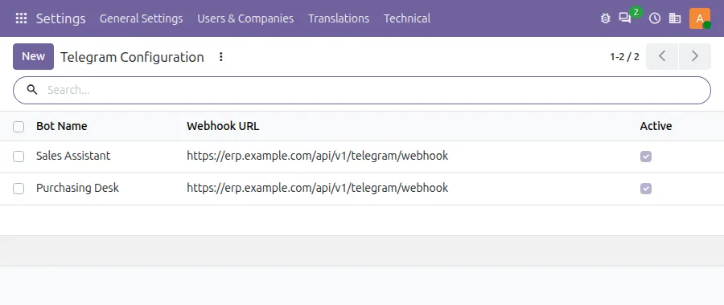
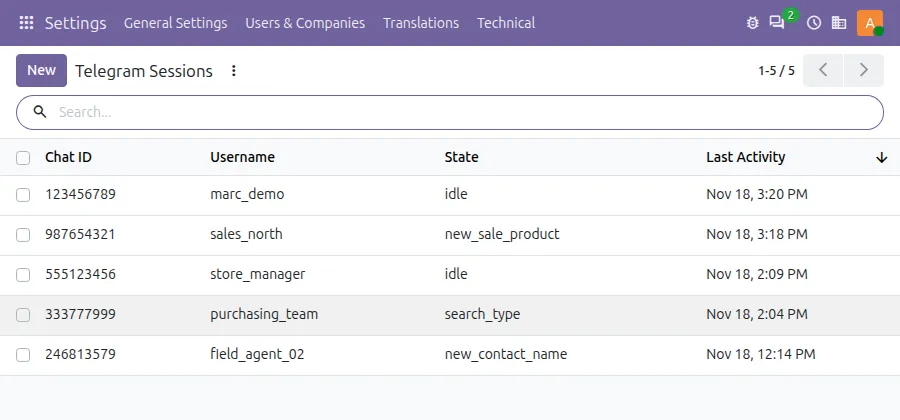
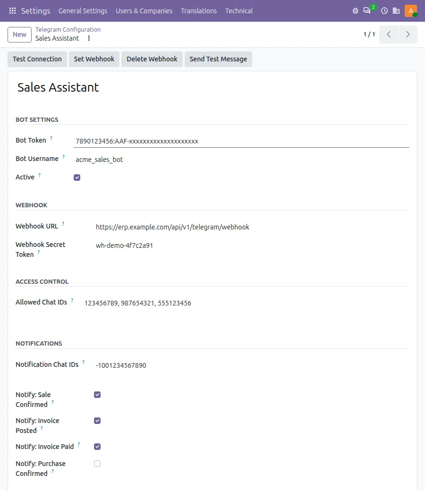

Telegram Integration - Telegram Bot and Notifications
Telegram bot for Odoo: browse and create sales orders, invoices, purchases and contacts from Telegram chat, with real-time Telegram notification of events.
- Price
- $9.99
- Odoo versions
- 16.0
- 17.0
- 18.0
- 19.0
- 20.0
- Technical name
tamadoo_telegram_integration- License
- OPL-1

Text and screenshots below are from the Odoo 20.0 version of this module.
Run your Odoo business from Telegram. Browse, search, and create sales orders, invoices, purchase orders, and contacts — all via chat. Get instant alerts the moment a deal closes, invoice is posted, or payment arrives. Real-time webhook, zero polling delay.
Screenshots



Key Features
Real-time Webhook
Messages processed instantly via Telegram's push webhook — no cron polling, zero delay.
Browse & Search
List recent sales, invoices, purchases, contacts with pagination. Search any record by name or ID.
Create Records
Guided multi-step creation for sale orders, invoices, purchase orders, and contacts — entirely in chat.
Instant Notifications
Automatic Telegram alerts: sale confirmed, invoice posted, invoice paid, purchase confirmed.
Access Control
Whitelist of allowed chat IDs. Unauthorized chats are silently rejected.
Multi-company Ready
Each bot config is scoped to a company. All data queries are filtered to the configured company.
Webhook Security
Optional secret token verified on every incoming request (X-Telegram-Bot-Api-Secret-Token header).
Session Management
Per-chat conversation state. Stale sessions cleaned up automatically every 2 hours.
Bot Commands
View Records
| Command | Description |
|---|---|
/sales | Browse recent sale orders (5 per page, paginated) |
/invoices | Browse recent invoices |
/purchases | Browse recent purchase orders |
/contacts | Browse recent contacts |
Search
| Command | Description |
|---|---|
/search | Search by name or ID — choose type (contact / sale / invoice / purchase), then type a query |
Create Records
| Command | Description |
|---|---|
/newsale | Create a sale order (customer → products → confirm) |
/newinvoice | Create an invoice (customer → date → products → confirm) |
/newpurchase | Create a purchase order (vendor → products → confirm) |
/newcontact | Create a contact (name → email → phone → Tax ID) |
Other
| Command | Description |
|---|---|
/start | Welcome message |
/help | Full command list |
/status | Bot connection status |
/cancel | Cancel any in-progress operation |
Architecture & Data Flow
BotFather is used only once at setup to obtain the bot token. It is never part of the live data flow.
Automatic Notifications
| Event | Toggle |
|---|---|
| Sale order confirmed | Notify: Sale Confirmed |
| Invoice posted | Notify: Invoice Posted |
| Invoice paid / in payment | Notify: Invoice Paid |
| Purchase order confirmed | Notify: Purchase Confirmed |
Example: Create a Sale from Telegram
User: /newsale
Bot: 🛒 New Sale Order
Step 1 of 3: Customer
Type the customer name to search.
User: John
Bot: Found 2 customers:
[👤 John Doe] [👤 John Smith]
User: [taps John Doe]
Bot: ✅ Customer: John Doe
Step 2 of 3: Products
Type a product name to search.
User: Vaccine
Bot: [💊 Rabies Vaccine]
User: [taps Rabies Vaccine] → Quantity: 2 → Price: 150000
Bot: ✅ Added: Rabies Vaccine — 2 × Rp 150.000 = Rp 300.000
Type another product name or /done
User: /done
Bot: ✅ Sale Order Created!
Order: S/2026/0042
Customer: John Doe
Total: Rp 300.000
Step by step
1. Create the bot in Telegram
In Telegram, open a chat with @BotFather, send /newbot and follow the questions. Copy the bot token it gives you.
2. Get your chat ID
Send any message to @userinfobot. It answers with your numeric ID.
3. Enter the bot in Odoo
Activate the developer mode and open Settings → Technical → Telegram Integration → Telegram Bot. Create a record and fill in Bot Token, Webhook URL (https://yourdomain.com/api/v1/telegram/webhook), Allowed Chat IDs and Notification Chat IDs. Tick the notifications you want.

4. Connect
Save, then click Test Connection to check the token, Set Webhook to link Telegram to your Odoo, and Send Test Message to check the notification chat.
5. Use it
Send /help to your bot in Telegram to get the list of commands.
localhost:8069 with a public HTTPS URL.
Run ngrok http 8069, copy the URL, set it as your Webhook URL, click Set Webhook.
Requirements
| Requirement | Notes |
|---|---|
| Odoo 20.0 | Community or Enterprise |
Python requests library | pip install requests |
| Telegram account | Free — bot created via @BotFather |
| Public HTTPS URL | Production server, or ngrok for local development |
Security Notes
- Bot token stored in Odoo DB — protect your database access.
- Allowed Chat IDs whitelist prevents unauthorized users from interacting with the bot.
- Webhook Secret Token option verifies that requests genuinely originate from Telegram.
- All webhook traffic uses HTTPS.
- Message text passes through Telegram's servers (covered by Telegram's Privacy Policy).
- Odoo data sent as formatted reply text — no raw database dumps.
Module Structure
Get Telegram Integration
Questions before buying? Write to tama.odoo@gmail.com.